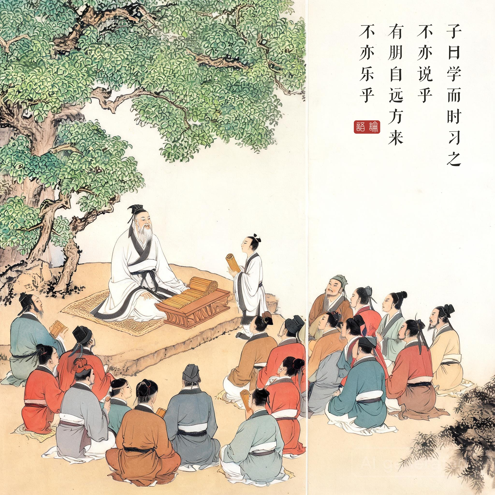
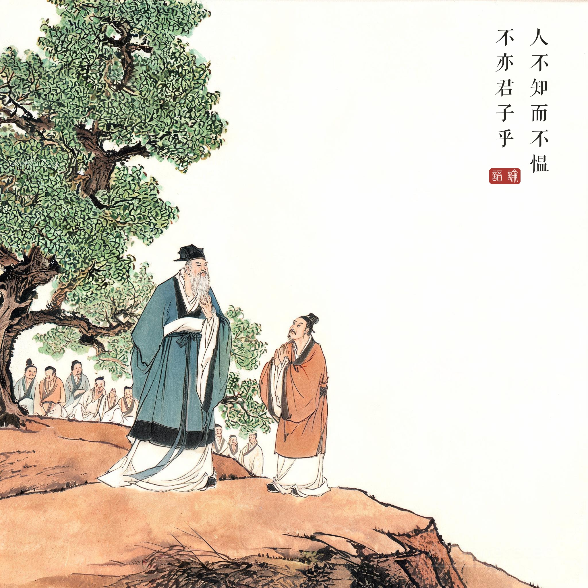
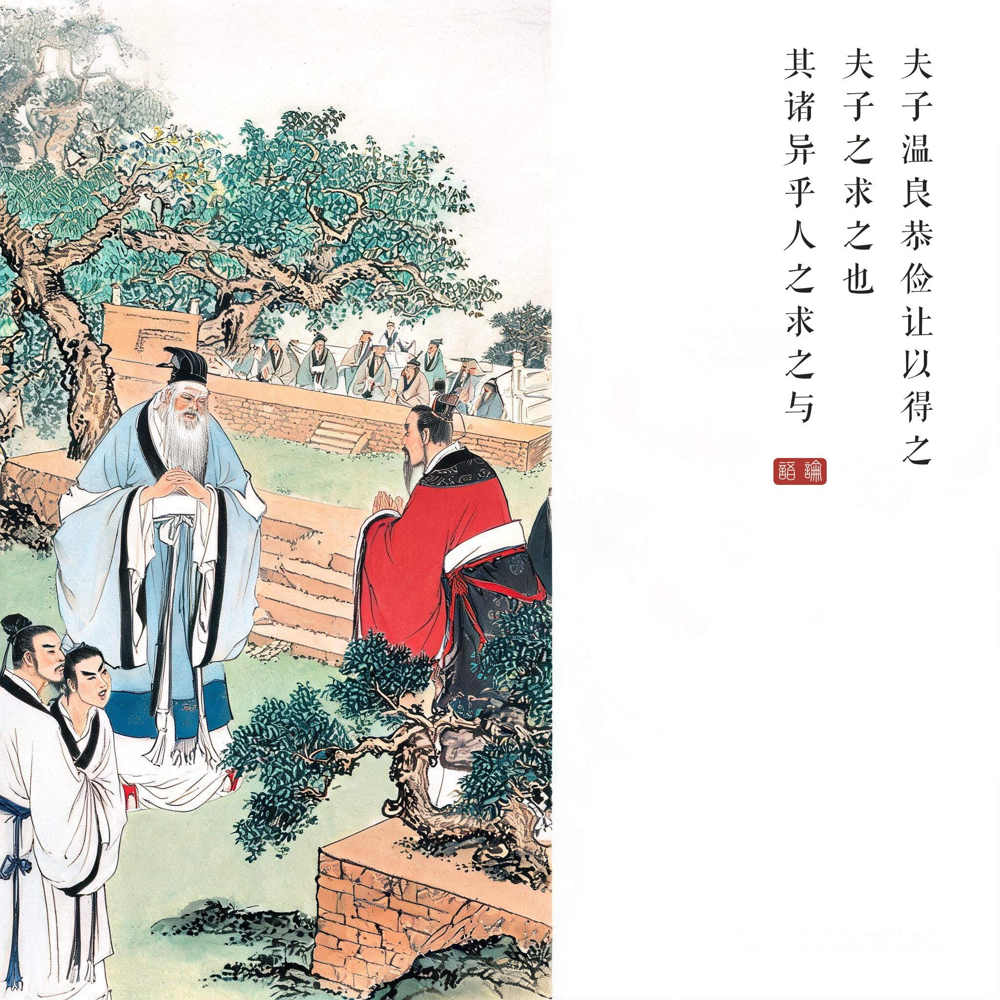
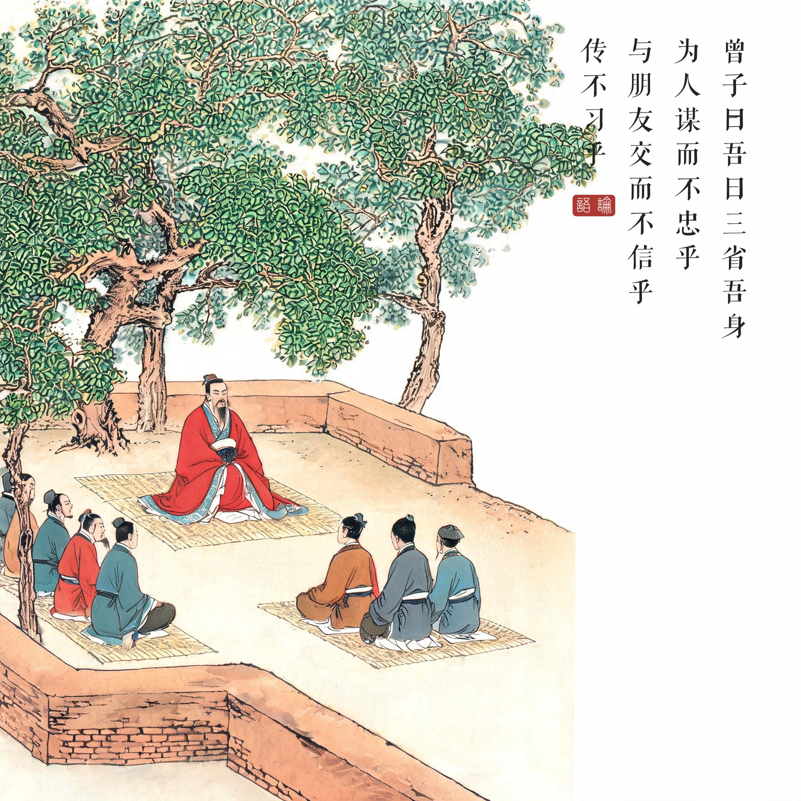

《论语 · 学而第一》开篇诸章。杏坛设教见于后世儒家传记传统；《论语》为孔子弟子及再传弟子所纂辑。
（据 daizhigev20《论语》底本节录，题款诸句见组画清单）
孔子说："学了又按时温习，不也欣喜吗？有朋友从远方来，不也快乐吗？人家不了解我，我却不怨恨——不也是君子吗？"这是《论语》开卷第一义：为学之乐，根在自己心里。
子禽问子贡：先生每到一国必闻其政，是求来的还是人家给的？子贡答："先生靠温、良、恭、俭、让得来。先生那种求法，或许与别人的求法不同吧。"
曾子说："我每天多次反省自己：替人谋事是否尽忠？与朋友交是否守信？老师传授的是否温习了？"
开卷为什么是这一章。《论语》二十篇，四百九十二章，编纂者把"学而时习之"放在第一句，不是偶然。孔子一生"学而不厌，诲人不倦"，这八个字是他的自我写照，也是儒家为学的总纲：学不是功利手段，"说""乐"本身就是目的。
"人不知而不愠"的分量。春秋之世，士人以见用为荣。孔子周游列国而不见用，却把"不愠"立为君子的标准——把自我价值从他人的认可中解放出来，这是相当超前的精神独立宣言。
读画小识。第一幅取杏坛讲学全景：老杏树下、弟子环坐，是从汉代画像石到明清圣迹图绵延千年的"孔子问学"经典构图；第三幅子禽子贡对话在旁侧进行，夫子与来客在远景——同章问答，两个空间并置于一画。